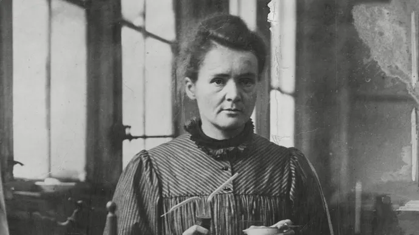
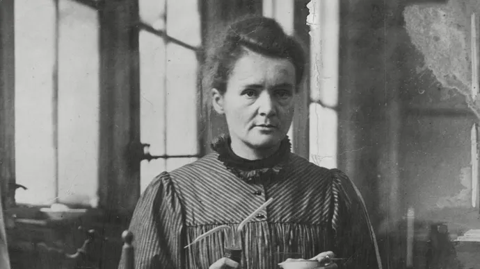

First woman to win a Nobel Peace Prize


Marie Curie, née Maria Salomea Skłodowska was born.
Skłodowska went to Paris and, now using the name Marie, began to follow the lectures of Paul Appell, Gabriel Lippmann, and Edmond Bouty at the Sorbonne.
She came first in the licence of physical sciences
Marie married Pierre Curie, which was when her name became Marie Curie.
Marie's first daughter, Irene, is born.
Marie was hired to do some experiments. While working on them she discovered pure radium.
Marie and her husband, Pierre, were awarded a Nobel Prize for their work with radioactivity.
Marie was promoted to the chief assistant to her husband in his laboratory.
Pierre began teaching at Sorbonne.
Marie's husband, Pierre, was killed in an accident. She took his place teaching at Sorbonne and was the first woman professor there.
Marie won her second Nobel Prize, this time on her own, for her continued work in radioactivity.
During WWI, Marie used her radioactive research materials to do "x-rays". The x-rays found bullets and other shrapnel in wounded soldiers.
Marie became a member of the French Academy of Medicine. She devoted herself to using her knowledge to help people.
Marie was honored everywhere she went, and was given a gram of radium as a gift.
Marie and her sister started a research facility to help fight cancer. It is still opened today and is called the Marie Sklodowska Curie Oncology Center.
Marie got sick and died shortly after, but she will never be forgotten. Her work helped advance the medical world and save thousands of lives.